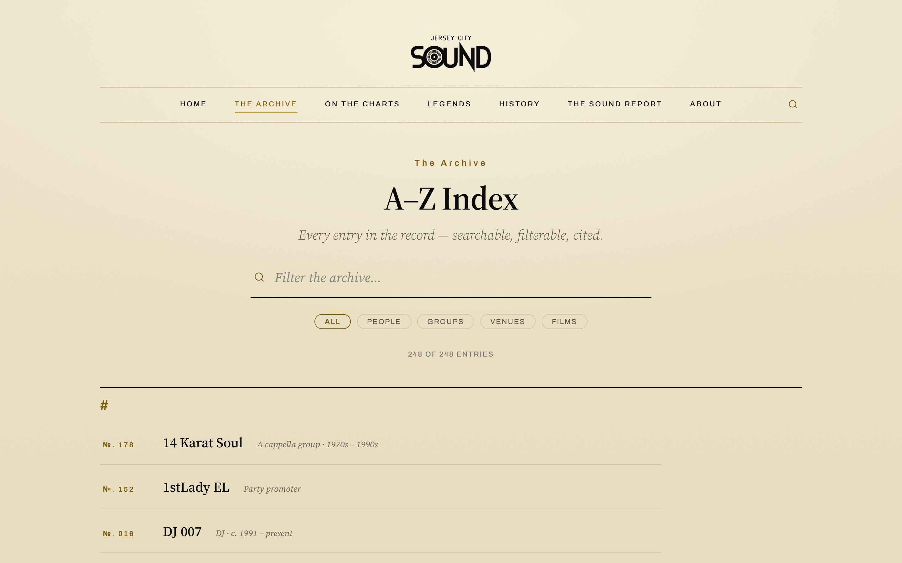
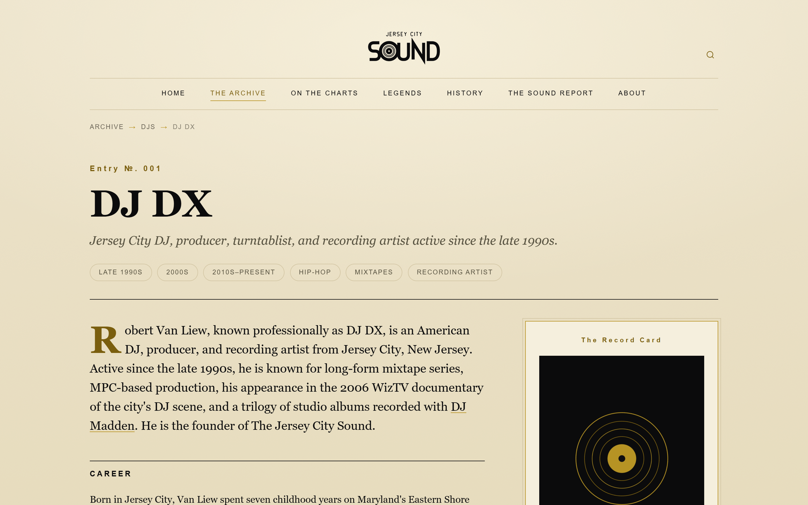
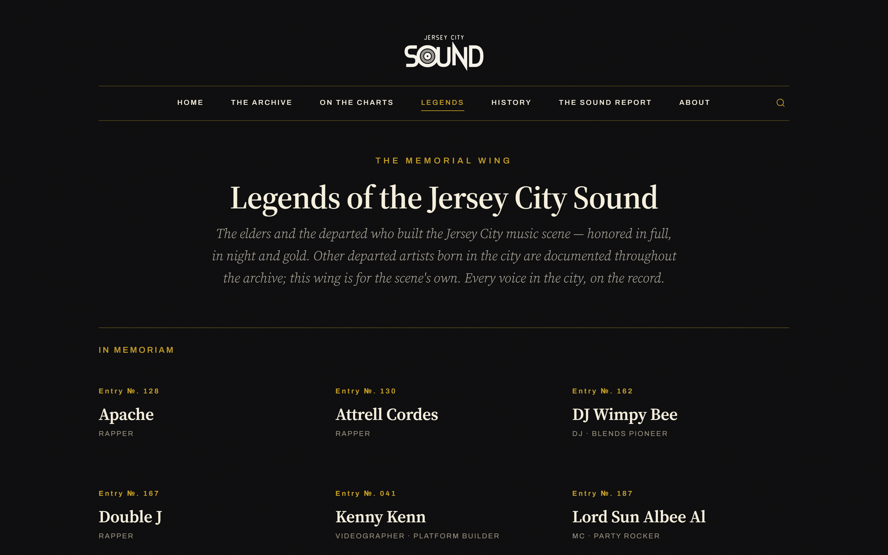
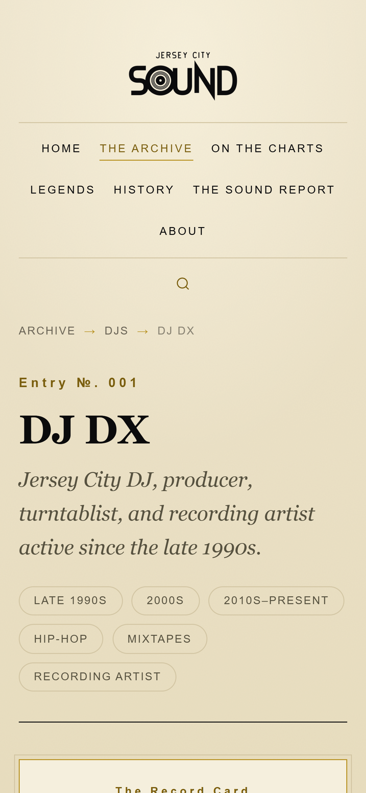

An archive fails in one of two ways. It either becomes a CMS nobody maintains, or it becomes a pile of hand-edited pages that drift out of sync with each other. The decision here was to make the data the site. Every entry, with its facts, sources, roles, years active, cross-links, and galleries, lives in a single file at data/entries.json. Nothing about an entry is stored in its page, because the page does not exist until the generator writes it.
One Python file, execution/generate_entry_pages.py, reads that data and writes the site. Every entry page, the A to Z archive index, the Legends memorial wing, the Sources bibliography, the search index, the sitemap, robots.txt, and llms.txt. It also deletes orphans, so an entry removed from the data disappears from the site instead of lingering as a dead URL. A correction from a family member is a one-line edit and a commit, not a content migration.
The archive currently holds 248 entries. 247 of them are generated. The last one, entry-dj-dx.html, is hand-authored, and the generator is written to leave it alone. That exception is the proof the template is right: a page written by hand and a page written by the script are indistinguishable in the browser. That was the standard the entry template had to meet before I let it generate anything.

The entry template is the core unit, so it got the most attention. Breadcrumb, entry number set in letterspaced caps, name in a display serif, a one-line descriptor, then era and genre chips. The Record Card sits in the right rail holding the structured facts: portrait, years active, roles, genres, notable works, affiliations, and official links behind a gold hairline frame. Below that a lead paragraph, then Career, Notable Works, Credits and Receipts, In the Community, Gallery, numbered Sources, a claim bar, and three related entries.
The lead paragraph is written to a specific brief: forty to sixty words, self-contained, answering who this person is with no surrounding context needed. That is the passage a reader skims and the passage a language model quotes. Everything above it exists to frame it, and everything below it exists to support it.

The editorial standard is cite or cut. Nothing enters the archive without a source. That is a design constraint before it is an editorial one, because it forces the numbered sources block into the template as a permanent section rather than an optional footer. It also sets the tone: museum label, not music blog. Factual, warm, no hype, no beef. Receipts instead of adjectives.
The site runs two themes. Archival paper by default, warm and slightly off-white, with hairline rules instead of boxes and gold used like gilding at roughly five percent of any page. The Legends memorial wing inverts to night and gold. Same logo, same typefaces, same grid, same spacing. Ten entries live there. The inversion is enough to make the wing feel like a different room without making it a second brand, which matters because these are memorial pages for people the community lost and they should not read like a themed microsite.

An archive nobody finds is a private document. The goal was blunter than ranking. When someone asks who the first Jersey City DJs were, whether they ask a search engine or a model, the answer should come from the people who were actually there. That means writing for extraction, not only for keywords.
Every entry ships Person or MusicGroup schema with sameAs links out to official sites, streaming profiles, and Wikidata, plus a BreadcrumbList. Sitewide there is Organization with areaServed set to Jersey City, and a WebSite graph. Pillar and history pages carry FAQPage blocks phrased the way people actually ask. The sitemap is generated alongside the pages, so it cannot fall behind the content it describes.
The writing does the rest. Claims are countable. Years active, residencies with date ranges, release numbers, each with a source next to it. "Legendary" is not a fact and does not appear anywhere in the archive. Language models extract passages rather than pages, so the lead paragraph on every entry is built as a standalone definition and the citations sit inline where they can be seen. llms.txt and llms-full.txt sit at the root, and robots.txt explicitly welcomes GPTBot, ClaudeBot, PerplexityBot, and Google-Extended rather than defaulting them out.
data/entries.json with its citations attached.
This one is a monument, not a media site. Static HTML with no dependencies means it still loads in twenty years, which is the actual requirement when the subject is people's history. The generator means a correction becomes a live page in one commit. The schema means the archive answers the question wherever the question gets asked. The hardest part was never the code. It was holding the line on cite or cut when a good story arrived without a source.
Visit the live site ↗